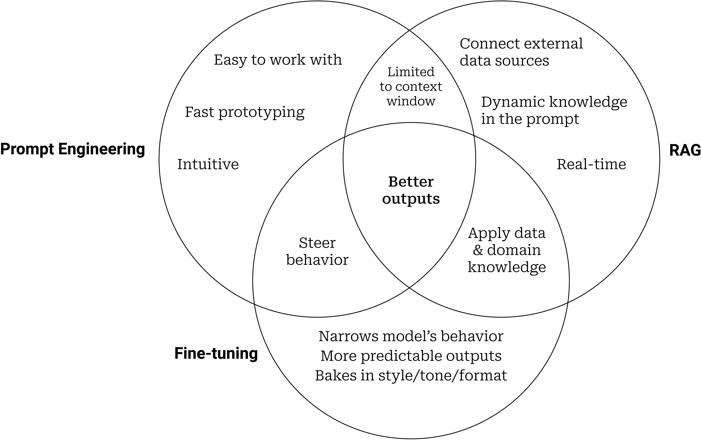
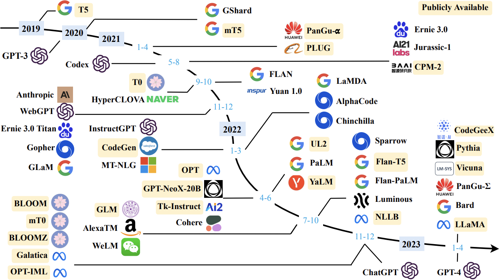
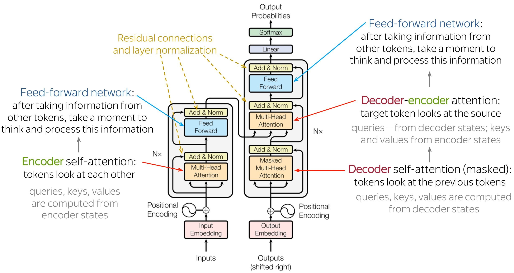
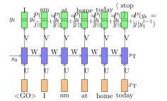
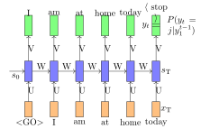
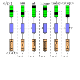
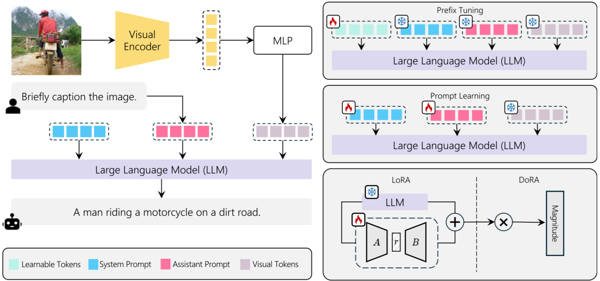
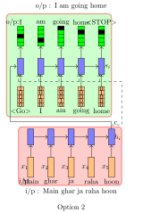
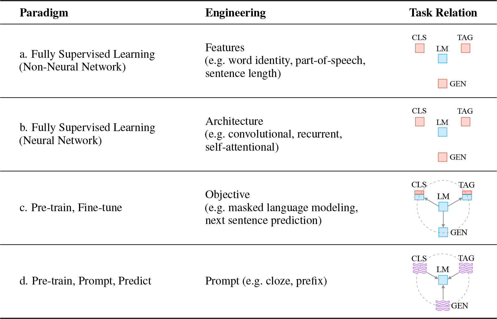
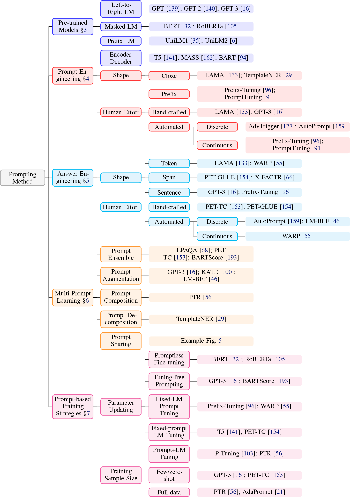

AD698 - Applied Generative AI
Text Generation with Large Language Models
Boston University
March 12, 2024
How to print Revealjs slides

The Shift to Prompt-Based Approaches
From Training-Centric AI to Inference-Centric AI
Traditional ML paradigm:
- Model behavior determined primarily during training
- Deployment phase largely static
- Adaptation requires:
- retraining
- fine-tuning
- feature redesign
Large Language Model paradigm:
- Model behavior can be modified at inference time
- Adaptation occurs through:
- prompts
- context
- task specification
This represents a fundamental architectural shift in AI systems.
Classical Learning vs Generative Conditioning
- Classical supervised learning: y = f_\theta(x)
- Behavior changes require updating \theta through training.
- Generative language models: P(Y \mid X, \theta)
- Prompt-based control introduces: P(Y \mid X, p, \theta)
- Prompting modifies inference distribution, not model weights.
Prompt as an Inference-Time Control Signal
A prompt functions as:
- a conditioning signal
- a soft constraint
- a semantic policy
- a probabilistic steering mechanism
Implications:
- rapid task adaptation
- reduced need for retraining
- dynamic behavior shaping
- interactive AI workflows
Prompt Engineering, Fine-tuning, and RAG

Figure 1. Venn Diagram of Prompt Engineering, Fine-tuning, and RAG
Why Prompting Works
- Prompting works because LLMs are:
- trained on diverse linguistic patterns
- capable of contextual reasoning
- sensitive to semantic structure
- internally structured via attention mechanisms
- Prompting activates latent capabilities rather than creating new ones.
Transformer Models
The Transformers Timeline

Figure 2. Timeline of transformer-based models
Transformer Models

Figure 3. Transformer Architecture
Encoder and Decoder Models
Language Modeling with RNNs

We will start by revisiting the problem of language modeling.
Informally, given t-1 words, we are interested in predicting the t^{\text{th}} word.
More formally, given y_1, y_2, \dots, y_{t-1}, we want to find y^* = \arg\max P(y_t \mid y_1, y_2, \dots, y_{t-1})
Let us see how we model P(y_t \mid y_1, y_2, \dots, y_{t-1}) using an RNN.
We will refer to P(y_t \mid y_1, y_2, \dots, y_{t-1}) using the shorthand notation:
P(y_t \mid y_1^{t-1})
RNN Probability Computation

We are interested in
P(y_t = j \mid y_1, y_2, \dots, y_{t-1})
where j \in V and V is the set of all vocabulary words.
Using an RNN, we compute this as
P(y_t = j \mid y_1^{t-1}) = \operatorname{softmax}(V s_t + c)_j
In other words, we compute
\begin{aligned} P(y_t = j \mid y_1^{t-1}) &= P(y_t = j \mid s_t) \\ &= \operatorname{softmax}(V s_t + c)_j \end{aligned}
Notice that the recurrent connections ensure that s_t has information about y_1^{t-1}.
Training an RNN Language Model
Note
Data: India, officially the Republic of India, is a country in South Asia. It is the seventh-largest country by area, …..
Data: All sentences from any large corpus (say Wikipedia).
Model:
\begin{aligned} s_t &= \sigma(W s_{t-1} + U x_t + b) \\ P(y_t = j \mid y_1^{t-1}) &= \operatorname{softmax}(V s_t + c)_j \end{aligned}
Parameters: U, V, W, b, c
Loss:
\begin{aligned} \mathcal{L}(\theta) &= \sum_{t=1}^{T} \mathcal{L}_t(\theta) \\ \mathcal{L}_t(\theta) &= - \log P(y_t = \ell_t \mid y_1^{t-1}) \end{aligned}
where \ell_t is the true word at time step t.
What Is the Input at Each Time Step?

What is the input at each time step?
It is simply the word that we predicted at the previous time step.
In general,
s_t = \operatorname{RNN}(s_{t-1}, x_t)
Let j be the index of the word assigned the maximum probability at time step t-1.
x_t = e(v_j)
x_t is essentially a one-hot vector, e(v_j), representing the j^{\text{th}} word in the vocabulary.
In practice, instead of a one-hot representation, we use a pre-trained word embedding of the j^{\text{th}} word.
Initial Hidden State
Notice that s_0 is not computed but instead randomly initialized.
We learn it along with the other parameters of the RNN (or LSTM or GRU).
We will return to this later.
Compact Recurrent Notation
Before moving on, it is useful to write the functions computed by RNNs, GRUs, and LSTMs in a compact form.
We will use these notations going forward.
Compact Form: RNN
\begin{align} s_t &= \sigma(U x_t + W s_{t-1} + b)\\ s_t &= \operatorname{RNN}(s_{t-1}, x_t) \end{align}
A standard RNN updates its hidden state using:
- the current input x_t
- the previous hidden state s_{t-1}
This compact notation emphasizes that the hidden state is a function of:
(s_{t-1}, x_t)
We will use this shorthand repeatedly in later derivations.
Compact Form: Gated Recurrent Unit (GRU)
\begin{align} \tilde{s_t} &= \sigma\!\left(W (o_t \odot s_{t-1}) + U x_t + b\right)\\ s_t &= i_t \odot s_{t-1} + (1 - i_t) \odot \tilde{s_t}\\ s_t &= \operatorname{GRU}(s_{t-1}, x_t) \end{align}
A GRU modifies the standard recurrent update with gating.
These gates regulate how much past information is preserved and how much new information is incorporated.
In compact form, we treat the whole gated update as:
\operatorname{GRU}(s_{t-1}, x_t)
Compact Form: LSTM
\begin{align} \tilde{s_t} &= \sigma(W h_{t-1} + U x_t + b)\\ s_t &= f_t \odot s_{t-1} + i_t \odot \tilde{s_t}\\ h_t &= o_t \odot \sigma(s_t)\\ h_t, s_t &= \operatorname{LSTM}(h_{t-1}, s_{t-1}, x_t) \end{align}
The LSTM maintains two recurrent quantities:
- the cell state s_t
- the hidden state h_t
This allows the model to preserve long-range information more effectively than a standard RNN.
In compact notation, the update is written as:
(h_t, s_t) = \operatorname{LSTM}(h_{t-1}, s_{t-1}, x_t)
Guiding Questions for Sequence Modeling Tasks
- What kind of network can we use to encode the input(s)?
- What kind of a network can we use to decode the output?
- What are the parameters of the model?
- What is an appropriate loss function?
Example: Image Captioning
Figure 8
Example: Image Captioning
Algorithm: Gradient descent with backpropagation
Model:
Encoder: s_0 = \operatorname{CNN}(x_i)
Decoder:
\begin{align} s_t &= \operatorname{RNN}(s_{t-1}, e(\hat{y}_{t-1}))\\ P(y_t \mid y_1^{t-1}, I) &= \operatorname{softmax}(V s_t + b) \end{align}
Parameters:
U_{\text{dec}},\; V,\; W_{\text{dec}},\; W_{\text{conv}},\; bLoss: \begin{align} \mathcal{L}(\theta)& =\sum_{t=1}^{T} \mathcal{L}_t(\theta) = - \sum_{t=1}^{T} \log P(y_t = \ell_t \mid y_1^{t-1}, I) \end{align}
Image Captioning

Figure 9. Image Captioning Model
Other Tasks
- Textual entailment
- Machine translation
- Transliteration (e.g., English to Hindi)
- Image generation from text
- Code generation from text
- Speech recognition
- etc.
Attention Mechanisms
Why Do We Need Attention?

- Let us motivate the task of attention with the help of machine translation.
- The encoder reads the source sentence only once and produces an encoding.
- At each time step, the decoder uses this encoding to produce a new word.
- But is this how humans translate a sentence? Not really.
Human Intuition Behind Attention
Output: I am going home \begin{align} t_1 : [1,\;0,\;0,\;0,\;0]\\ t_2 : [0,\;0,\;0,\;0,\;1]\\ t_3 : [0,\;0,\;0.5,\;0.5,\;0]\\ t_4 : [0,\;1,\;0,\;0,\;0] \end{align}
Input: Main ghar ja raha hoon
- Humans often produce each output word by focusing only on certain words in the input.
- At each time step, we can think of the translator as forming a distribution over the input words.
- This distribution tells us how much attention to pay to each input word at that time step.
- Ideally, the decoder should receive primarily the relevant information, rather than the entire source representation uniformly.
More Complex Attention Patterns
Note
We will cover these in video lectures in Module 8
Prompt Engineering as System Design
Two Sea Changes in NLP
Fully supervised learning
Models trained only on task-specific labeled data
→ heavy reliance on feature engineering
(e.g., )Neural supervised learning
Features learned jointly through architecture engineering
(e.g., CNNs, RNNs, attention models)
(e.g., )Pre-train → Fine-tune paradigm (2017–2019)
Large language models trained on massive corpora, then adapted via
objective engineering
(e.g., )Pre-train → Prompt → Predict (current paradigm)
Tasks reformulated as language modeling problems using textual prompts
(e.g., )
Four Paradigms in NLP

Typology of Prompting Methods

Figure 11. Typology of prompting methods
Language Modeling Perspective
Instead of modeling:
P(\mathbf{y} \mid \mathbf{x})
we train a model to learn:
P(\mathbf{x})
over large text corpora.
This allows models to learn:
- syntax
- semantics
- discourse structure
- world knowledge
Prompting uses this learned distribution to solve tasks.
Prompting Concept
- Prompt-based learning reformulates tasks as language modeling.
- Instead of:
- training a task-specific model
- we:
- Convert input into a structured textual form
- Ask the language model to complete it
- Convert input into a structured textual form
- This reduces dependence on supervised data.
Prompting Terminology
| Concept | Notation | Example | Description |
|---|---|---|---|
| Input | \mathbf{x} | I love this movie. | Raw input text |
| Output | \mathbf{y} | ++ | Final task output |
| Prompting Function | f_{\text{prompt}}(\mathbf{x}) | [X] Overall it was a [Z] movie | Converts input into prompt form |
| Prompt | \mathbf{x'} | I love this movie. Overall it was a [Z] movie | Input inserted, answer slot open |
| Filled Prompt | f_{\text{fill}}(\mathbf{x'}, \mathbf{z}) | Overall it was a bad movie | Candidate answer inserted |
| Answered Prompt | f_{\text{fill}}(\mathbf{x'}, \mathbf{z^*}) | Overall it was a good movie | True answer inserted |
| Answer | \mathbf{z} | good / bad / fantastic | Token or phrase used to solve task |
Prompt Construction
Prompting transforms input:
\mathbf{x'} = f_{\text{prompt}}(\mathbf{x})
Typical template structure:
- input slot: [X]
- answer slot: [Z]
Example (sentiment):
[X] \; \text{Overall it was a [Z] movie}
Example (translation):
\text{Finnish: [X] English: [Z]}
Types of Prompts
Two common forms:
Cloze prompts - answer slot inside sentence
Example:
The movie was [Z].
Prefix prompts - answer follows entire input
Example:
Translate: [X]
Prompts may also:
- use virtual tokens
- use continuous embeddings
- contain multiple input or output slots
–
Answer Search
We define:
\mathcal{Z} = \text{set of possible answers}
Then compute:
\hat{\mathbf{z}} = \arg\max_{\mathbf{z} \in \mathcal{Z}} P(f_{\text{fill}}(\mathbf{x'}, \mathbf{z}); \theta)
Search strategies:
- argmax decoding
- probabilistic sampling
Mapping Answers to Outputs
In some tasks:
\hat{\mathbf{y}} = \hat{\mathbf{z}}
In others:
- multiple answers correspond to same label
Example:
excellent, amazing → positive
Thus we define:
g: \mathbf{z} \rightarrow \mathbf{y}
Design Considerations in Prompting
Key dimensions:
- Choice of pre-trained model
- Prompt engineering
- Answer engineering
- Multi-prompt learning
- Prompt-based training strategies
Prompting is not just inference —
it is a full modeling paradigm.
Prompting Design Space
Prompting methods vary across:
- Pre-trained model type
- Prompt construction method
- Answer representation
- Training strategy
- Multi-prompt composition
This defines a rich design space for LLM control.
Implications for AI Engineering
The shift to prompt-based approaches enables:
- faster prototyping cycles
- lower development costs
- human-in-the-loop interaction
- dynamic system reconfiguration
- probabilistic software architectures
This marks a transition from:
Static Models → Interactive Generative Systems